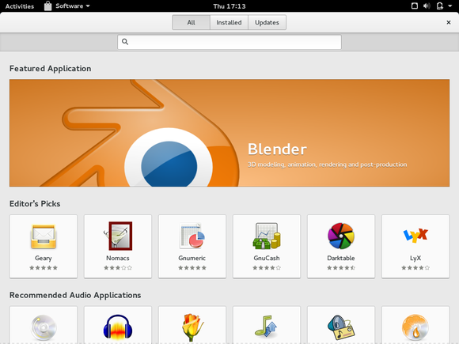

<!doctype html>
<html>

<head>
	<meta charset="utf-8">
	<meta name="viewport" content="width=device-width, initial-scale=1.0, maximum-scale=1.0, user-scalable=no">

	<title>Linux - Ophase WS 17/18</title>

	<link rel="stylesheet" href="revealjs/css/reveal.css">
	<link rel="stylesheet" href="revealjs/css/theme/black.css">
	<link rel="stylesheet" href="custom.css">

	<!-- Theme used for syntax highlighting of code -->
	<link rel="stylesheet" href="revealjs/lib/css/zenburn.css">

	<!-- Printing and PDF exports -->
	<script>
		var link = document.createElement('link');
		link.rel = 'stylesheet';
		link.type = 'text/css';
		link.href = window.location.search.match(/print-pdf/gi) ? 'css/print/pdf.css' : 'css/print/paper.css';
		document.getElementsByTagName('head')[0].appendChild(link);
	</script>
</head>

<body>
	<div class="reveal">
		<div class="slides">
			<section data-markdown data-separator="^\n---\n$" data-separator-vertical="^\n--\n$">
				<script type="text/template">
				# Linux-Vortrag
				#### Winterophase 18/19
				Heiko Carrasco

				--

				### Vortragsfolien
				

				https://tinyurl.com/linux-vortrag

				---

				### About me
				+ Linux Nutzer seit ~2009
				+ Komplett umgestiegen ~2012

				---

				### Was ist Linux?
				> Als Linux oder GNU/Linux bezeichnet man in der Regel freie, unix-ähnliche Mehrbenutzer-Betriebssysteme, die auf dem Linux-Kernel und wesentlich auf GNU-Software basieren.

				Wikipedia, schlaues Internetlexikon<!-- .element: class="fragment fade-up" data-fragment-index="1" -->

				--

				### Warum mit Linux beschäftigen?
				+ Es wird euch im Studium begegnen<!-- .element: class="fragment" data-fragment-index="1" -->
				+ Viele relevante Studiumsangelgenheiten werden leichter<!-- .element: class="fragment" data-fragment-index="2" -->

				--

				### Warum ein Vortrag und kein Workshop?
				+ Linux ist komplex<!-- .element: class="fragment" data-fragment-index="1" -->
				+ Einstieg ein bisschen erleichtern<!-- .element: class="fragment" data-fragment-index="2" -->
				+ Installationsworkshop morgen<!-- .element: class="fragment" data-fragment-index="3" -->

				---

				<!-- .slide: data-background-video="img/history.mp4" data-background-video-loop="true"-->
				# Geschichte

				--

				### Wer hat es erfunden?

				

				Linus Torvalds<!-- .element: class="fragment fade-up" data-fragment-index="1" -->


				--

				### Geschichte
				+ Am Anfang war Unix<!-- .element: class="fragment" data-fragment-index="1" -->
				+ Entwickelt von Ken Thompson und Dennis Ritchie (Bell Labs)<!-- .element: class="fragment" data-fragment-index="2" -->
				+ Ziel: Möglichst einfaches Betriebssystemdesign<!-- .element: class="fragment" data-fragment-index="3" -->

				--

				### Geschichte (Unix)
				

				<small>By Eraserhead1, Infinity0, Sav_vas [<a href="https://creativecommons.org/licenses/by-sa/3.0">CC BY-SA 3.0 </a> or <a href="http://www.gnu.org/copyleft/fdl.html">GFDL</a>], <a href="https://commons.wikimedia.org/wiki/File:Unix_history-simple.svg">via Wikimedia Commons</a></small>

				--

				### Geschichte (Cont'd)
				+ 1980 nutzten die meisten Unis (unfreie) Unixderivate<!-- .element: class="fragment" data-fragment-index="1" -->
				+ Torvalds, damals Student ('91), wollte sich einen Client für den Server der Uni schreiben<!-- .element: class="fragment" data-fragment-index="2" -->
				+ Immer mehr Funktionen angefügt<!-- .element: class="fragment" data-fragment-index="3" -->
				+ OpenSourced unter dem Namen Linux (Linus + Freax)<!-- .element: class="fragment" data-fragment-index="4" -->

				---

				<!-- .slide: data-background-video="img/matrix.mp4" data-background-video-loop="true"-->
				# Open Source

				--

				### Was ist Open Source?
				+ Der Quellcode ist öffentlich<!-- .element: class="fragment" data-fragment-index="1" -->
					+ (damit ist das Programm meistens kostenlos :D )<!-- .element: class="fragment" data-fragment-index="2" -->
				+ Code steht unter einer OpenSource Lizenz (z.B. GNU, Apache, MIT, etc.)<!-- .element: class="fragment" data-fragment-index="3" -->
					+ Code darf modifiziert werden<!-- .element: class="fragment" data-fragment-index="4" -->
					+ Regelungen was die Weiterverbreitung betrifft<!-- .element: class="fragment" data-fragment-index="5" -->

				--

				### Bekanntere Projekte
				<!-- .element: class="fragment" data-fragment-index="1" -->
				<!-- .element: class="fragment" data-fragment-index="2" -->
				<!-- .element: class="fragment" data-fragment-index="3" -->


				--

				<!-- .slide: data-background-image="img/gnu.png" -->
				## Warum ist das ziemlich cool?

				--

				## Vorteile

				+ Weniger Sicherheitslücken (Viele-Augen-Prinzip)<!-- .element: class="fragment" data-fragment-index="1" -->
					+ vor allem weniger Backdoors<!-- .element: class="fragment" data-fragment-index="2" -->
				+ Lernen durch Code anderer<!-- .element: class="fragment" data-fragment-index="3" -->

				---

				<!-- .slide: data-background-video="img/kernel.mp4" data-background-video-loop="true"-->
				# Kernel

				--

				### Kernel
				+ Kern des Betriebssystem <!-- .element: class="fragment" data-fragment-index="1" -->
				+ Schnittstelle zwischen Software und Hardware <!-- .element: class="fragment" data-fragment-index="2" -->
				+ Prozessverwaltung, Speicherverwaltung, Input/Output (IO), etc... <!-- .element: class="fragment" data-fragment-index="3" -->

				--

				

				--

				### GNU/Linux
				+ Linux nur der Kernel<!-- .element: class="fragment" data-fragment-index="1" -->
				+ Für funktionales System werden einige Tools benötigt (shell, compiler)<!-- .element: class="fragment" data-fragment-index="2" -->
				+ Stallman to the rescue<!-- .element: class="fragment" data-fragment-index="3" -->

				--

				

				*Richard Stallman*

				GNU-Frickler und Bartträger <!-- .element: class="fragment" data-fragment-index="1" -->

				--

				<!-- .slide: data-background-image="img/stallman.jpg" data-background-repeat: "space" -->
				### GNU Projekt
				+ GNU sollte ein freies Unix werden (Gnu is Not Unix)<!-- .element: class="fragment" data-fragment-index="1" -->
				+ Kernel hängt ein "bisschen" hinterher<!-- .element: class="fragment" data-fragment-index="2" -->
				+ Linux Kernel + GNU Software == Nice<!-- .element: class="fragment" data-fragment-index="3" -->

				---

				<!-- .slide: data-background-video="img/trumpdistribution.mp4" data-background-video-loop="true"-->
				# Distributionen

				--

				### Distros
				+ Sammlungen mit Kernel und Programmen<!-- .element: class="fragment" data-fragment-index="1" -->
				+ Meistens mit einer Paketverwaltung<!-- .element: class="fragment" data-fragment-index="2" -->
				+ Fertige, installierbare Images<!-- .element: class="fragment" data-fragment-index="3" -->
				+ Meistens von Communities oder Firmen veröffentlicht<!-- .element: class="fragment" data-fragment-index="4" -->

				--

				### Beispiele
				
				
				
				

				---

				<!-- .slide: data-background-image="img/xp-blur.jpg" -->
				# Desktop-Umgebungen

				--

				<!-- .slide: data-background-image="img/style.jpg" data-background-repeat: "space" -->
				### Style your Desktop
				+ Wahl zwischen verschiedenen Benutzerkonzepten<!-- .element: class="fragment" data-fragment-index="1" -->
				+ Design kann angepasst werden<!-- .element: class="fragment" data-fragment-index="2" -->
				+ Meistens mit Sammlungen von Programmen verbunden<!-- .element: class="fragment" data-fragment-index="3" -->

				--

				### Gnome
				

				--

				### KDE
				

				--

				### Cinnamon
				

				---

				<!-- .slide: data-background-video="img/hackerman.mp4" data-background-video-loop="true"-->
				# Konsole

				--

				### Konsole
				+ Steuern des Computers über Kommandos<!-- .element: class="fragment" data-fragment-index="1" -->
				+ Direkter Zugang zum Betriebssystem<!-- .element: class="fragment" data-fragment-index="2" -->

				--

				<!-- .slide: data-transition="slide-in fade-out" -->

				### Wozu braucht man das?
				+ Schnelle und einfache Ausführung von Programmen<!-- .element: class="fragment" data-fragment-index="2" -->


				--

				

				--

				<!-- .slide: data-transition="fade" -->
				### Wozu braucht man das?
				+ Schnelle und einfache Ausführung von Programmen
				+ Dateioperationen gehen häufig relativ schnell und einfach<!-- .element: class="fragment" data-fragment-index="1" -->


				---

				<!-- .slide: data-background-video="img/filesystem.mp4" data-background-video-loop="true"-->
				# Das Dateisystem

				--

				### Die Ordnerstruktur
				+ / \- oberstes (root) Verzeichnis<!-- .element: class="fragment" data-fragment-index="1" -->
				+ /boot \- beim Start benötigte Dateien<!-- .element: class="fragment" data-fragment-index="2" -->
				+ /etc \- Globale Einstellungen<!-- .element: class="fragment" data-fragment-index="3" -->
				+ /home \- Verzeichnisse der Nutzer*innen<!-- .element: class="fragment" data-fragment-index="4" -->
				+ /tmp \- temporäre Dateien<!-- .element: class="fragment" data-fragment-index="5" -->
				+ /usr \- Systemteile, Software, Bibliotheken<!-- .element: class="fragment" data-fragment-index="6" -->

				--

				### Wie funktioniert es?
				+ Dateien haben Attribute (read, write execute)<!-- .element: class="fragment" data-fragment-index="1" -->
				+ Dateien haben Eigentümer*innen und Gruppenzugehörigkeiten<!-- .element: class="fragment" data-fragment-index="2" -->

				---

				<!-- .slide: data-background-video="img/package.mp4" data-background-video-loop="true"-->

				## Paketverwaltung
				Softwareinstallation in geil

				--

				### Installieren von Software unter Windows
				1. Im Netz nach einer Installationdatei suchen<!-- .element: class="fragment" data-fragment-index="1" -->
				+ Mit Adminrechten ausführen<!-- .element: class="fragment" data-fragment-index="2" -->
				+ Hoffen, dass man keinen Virus bekommen hat<!-- .element: class="fragment" data-fragment-index="3" -->

				--

				### Installieren von Software unter Linux
				+ Linuxdistributionen haben meistens eine Paketverwaltung<!-- .element: class="fragment" data-fragment-index="1" -->
				+ Damit lassen sich Programme mit einem Klick bzw. einem Kommando nachinstallieren<!-- .element: class="fragment" data-fragment-index="2" -->
				+ Abhängigkeiten zu anderen Programmen werden intelligent gelöst<!-- .element: class="fragment" data-fragment-index="3" -->
				+ Anwendungen werden up-to-date gehalten<!-- .element: class="fragment" data-fragment-index="4" -->

				--

				### Gnome Software
				

				---

				<!-- .slide: data-background-video="img/security.mp4" -->
				## Sicherheitskonzept

				--

				### Warum ist Linux sicher(-er)?
				+ Wenig Verbreitung == weniger Viren<!-- .element: class="fragment" data-fragment-index="1" -->
				+ OpenSource-Software<!-- .element: class="fragment" data-fragment-index="2" -->
				+ schnelle Sicherheitsupdates in den Repositories<!-- .element: class="fragment" data-fragment-index="3" -->
				+ gute Rechteverwaltung<!-- .element: class="fragment" data-fragment-index="4" -->

				---

				<!-- .slide: data-background-video="img/windows.mp4" -->
				## Windowsprogramme

				--

				### "Aber ich brauche noch dieses Programm..."
				+ Linux kann parallel zu Windows installiert werden<!-- .element: class="fragment" data-fragment-index="1" -->
				+ Virtuelle Maschine mit Windows<!-- .element: class="fragment" data-fragment-index="2" -->
				+ Direkt unter Linux mit Wine laufen lassen<!-- .element: class="fragment" data-fragment-index="3" -->

				---

				<!-- .slide: data-background-video="img/end.mp4" -->
				# Abschluss

				--

				### Verbreitung von Linux

				+ Sehr stark:<!-- .element: class="fragment" data-fragment-index="1" -->
					+ Server<!-- .element: class="fragment" data-fragment-index="2" -->
					+ Embedded Systems<!-- .element: class="fragment" data-fragment-index="3" -->
					+ Supercomputer<!-- .element: class="fragment" data-fragment-index="4" -->
					+ Smartphones<!-- .element: class="fragment" data-fragment-index="5" -->
				+ Noch sehr schwach:<!-- .element: class="fragment" data-fragment-index="6" -->
					+ Desktops

				--

				### Warum Linux?
				+ OpenSource<!-- .element: class="fragment" data-fragment-index="1" -->
				+ Paketverwaltung<!-- .element: class="fragment" data-fragment-index="2" -->
				+ mehr Auswahl<!-- .element: class="fragment" data-fragment-index="3" -->
				+ große Community<!-- .element: class="fragment" data-fragment-index="4" -->
				+ lernt viel über Betriebssysteme<!-- .element: class="fragment" data-fragment-index="5" -->
				+ etwas sicherer<!-- .element: class="fragment" data-fragment-index="6" -->


				--

				<!-- .slide: data-background-video="img/question.mp4" -->
				# Fragen

				--

				# Folien
				https://www.d120.de/workshops

				https://github.com/miterion/linux-vortrag

				</script>
			</section>
		</div>
	</div>

	<script src="revealjs/lib/js/head.min.js"></script>
	<script src="revealjs/js/reveal.js"></script>

	<script>
		// More info about config & dependencies:
		// - https://github.com/hakimel/reveal.js#configuration
		// - https://github.com/hakimel/reveal.js#dependencies
		Reveal.initialize({
			controls: false,
			history: true,
			dependencies: [
				{
					src: 'revealjs/plugin/markdown/marked.js'
				},
				{
					src: 'revealjs/plugin/markdown/markdown.js'
				},
				{
					src: 'revealjs/plugin/notes/notes.js',
					async: true
				},
				{
					src: 'revealjs/plugin/highlight/highlight.js',
					async: true,
					callback: function() {
						hljs.initHighlightingOnLoad();
					}
				}
			]
		});
	</script>
</body>

</html>
